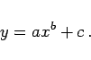
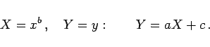
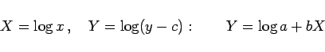
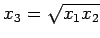

Inhalt Index DeskTop Bronstein

 Funktionen und ihre Darstellung Aufstellung empirischer Kurven Gebräuchlichste empirische Formeln Potenzfunktionen
Funktionen und ihre Darstellung Aufstellung empirischer Kurven Gebräuchlichste empirische Formeln Potenzfunktionen


|  | (2.245a) |
Hier handelt es sich um die gleichen Kurven wie für y=axb (2.244a) des vorigen Abschnittes, aber in y-Richtung um c verschoben.
Wenn b gegeben ist, dann wird rektifiziert gemäß
|  | (2.245b) |
Ist b unbekannt, dann wird zunächst c bestimmt und danach gemäß
|  | (2.245c) |
rektifiziert. Zur Bestimmung von c werden drei Punkte mit den Abszissen- und Ordinatenwerten x1,x2 beliebig,  und y1,y2,y3 gewählt, so daß  gilt. Nachdem a,b bestimmt worden sind, kann c korrigiert und zwar als Mittelwert der Größen y-axb gewählt werden.
gilt. Nachdem a,b bestimmt worden sind, kann c korrigiert und zwar als Mittelwert der Größen y-axb gewählt werden.